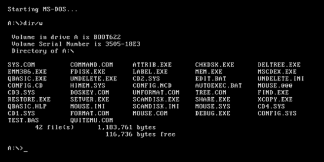

Building a Farsi Font for MS-DOS
It was around 30 years ago, when I had just started high school. There was no MS Windows, and the best operating system (OS) was MS-DOS.
If you don't know what MS-DOS is, just open your terminal or Command Prompt and maximize the window. You will get a sense of the environment I am talking about, except that it could only display 80 characters per row and had 25 rows (a standard VGA text mode was 80 × 25). And that was it. When you started the computer, that was what you would see.

I was working on a project, designing a workflow management system for a medical lab, using FoxPro, the state-of-the-art programming language, with incredible database management and a shiny User Interface. The software made by FoxPro was everywhere, from banks to government offices.
While I was working on this project, one thing caught my attention: we didn’t have a good, easy-to-use Farsi font for MS-DOS, something that being decent enough for my FoxPro project. I have to say, there was an MS-DOS Farsi font that most of the developed application were using, but it was so primitive and not elegant.
So, I embarked on a quest: how to develop a decent Farsi font for MS-DOS.
At that time, we didn’t have the internet, so if you had a question, either you had to find someone who knew it and rely on their answer, or spend an enormous amount of time going through library books.
I asked around on how to do it, and finally someone knew!
Him: “Your answer is in the OS reserved part of the RAM, where the shape of the characters is stored! If you change that, the shape of the characters changes!”
Me: “How can I change them?”
Him: “You must learn how to code in C and work with pointers, registers, and interrupts.”
Too many keywords for a teenager!
But it was a fascinating concept: I could read and change any specific part of RAM! It was like giving a kid a flashlight in a dark room full of toys!
There was a bookstore next to my high school, and it had a very thick book on C programming (~5-6 inches thick). I bought it and started learning C from scratch.
I still remember the excitement I felt at that time. I already knew how to code in BASIC, FoxPro, and some Pascal, but C was something different! I could change the very fabric of how the computer operated. As Thanos once famously said, “Reality can be whatever I want.”
Although I don’t have the code, as it is hopefully stored on a floppy disk, sitting in my parents' basement in Iran, I do remember some of the key concepts and challenges! Also, I have AI to help me navigate into my memory!
Character Design
First, let’s have an understanding of how characters were displayed in the standard VGA text mode in MS-DOS:
Shape
Each character shape, or glyph, was represented by a 16 × 8 pixel bitmap. The bitmap consisted of 16 rows of 8 bit, a binary matrix 8 × 16 where, if the bit is 1, it was displaying the foreground color, while a bit set to 0 displayed the background color.
Note: Every character also has another associated byte, which is technically its assigned name by the OS. For example, for “A”: “0x41” and “B”: “0x42”. For this project, I didn’t need to change these. Continue reading; you will discover why this is important to know,
Attributes
A regular screen size in MS-DOS was 80 × 25 characters. For every character position on the screen, video memory stored two bytes: one byte representing the character code, and another representing its attributes. The attribute byte determined the foreground color, background color, brightness, and whether the character blinked.
One bit for blinking, 3 for foreground color, one bit for bright or not, and 3 again for background color.
(font ROM, 16 bytes)
white fg · blue bg
bright · blinking
0x9F = binary
1 001 1 111: blinking, blue background, bright
white foreground. The character shape itself never changes—the
hardware combines the glyph from font memory with the colors from the
attribute byte at display time.The three color bits represented eight basic colors:
| Value | Color |
|---|---|
| 000 | Black |
| 001 | Blue |
| 010 | Green |
| 011 | Cyan |
| 100 | Red |
| 101 | Magenta |
| 110 | Brown |
| 111 | Light gray |
For the foreground, setting the intensity bit produced the brighter versions:
| Basic color | Bright version |
|---|---|
| Black | Dark gray |
| Blue | Light blue |
| Green | Light green |
| Cyan | Light cyan |
| Red | Light red |
| Magenta | Light magenta |
| Brown | Yellow |
| Light gray | White |
Therefore, the foreground could use 16 colors, while the background normally had only 8 colors because the highest bit was reserved for blinking.
Note: Each character has the same length, and in the screen the OS does not put any space between the characters. So in order to not let characters touch each other, the border columns must be left empty, with more room on the right side for Roman characters. For Farsi characters, as the writing direction is from right to left, more space must be on the left side.
the empty rightmost column (tinted)
keeps the glyphs from touching
the empty columns are on the left,
and the “ب” stroke reaches the right edge
to join the letter before it
Text-Rendering Engine
1. In an input field
In Farsi (Persian), text is written from right to left (RTL). The solution is to take control of the cursor and VGA memory!
A regular screen size in MS-DOS was 80 × 25 characters, and I know exactly where the cursor position was stored (The BIOS provided a video function for positioning the cursor.).
This was the easier scenario. I positioned the cursor at the right edge of the input field. After each keystroke, I displayed the appropriate Farsi glyph and moved the cursor one character position to the left.
In other words, the first character appeared at the far-right side of the field, and every subsequent character was placed immediately to its left. This allowed the text to grow naturally from right to left.
2. At the MS-DOS command prompt
The MS-DOS command prompt C:\> was fixed on the left side of the screen, and the standard DOS command-line editor expected characters to be entered and displayed from left to right.
For Farsi input, I wanted to keep the insertion point immediately to the right of the prompt. Whenever the user typed a new character, I shifted all the previously displayed Farsi characters one position to the right and inserted the new character at the fixed insertion point.
For example, To write گشایشی, the user will enter these:
C:\> گ C:\> شگ C:\> اشگ C:\> یاشگ C:\> شیاشگ C:\> یشیاشگ
Although the characters appeared reversed when viewed from left to right, reading them in the correct right-to-left direction produced:
گشایشی
To implement this behavior efficiently, I had to manipulate the VGA buffer directly.
C:\>;
every keystroke shifts the previously typed characters one cell to the
right and redraws them in their correct connected forms.
(Animation repeats.)The screen consist of 80 × 25 character, and for each character we have two bytes: one byte for the character code (which we already designed and loaded) and another for its color and display attributes. Therefore, for shifting a character, it means we have to shift these two byte! So, I had to make sure that after each keystroke, it updated and redrew the command line, and returned the hardware cursor to the fixed insertion position immediately after the prompt.
C:\>. Every screen cell is a two-byte pair—character
code, then attribute—laid out row after row. Shifting a character
one cell means moving both of its bytes two positions over in this
buffer.Connected letters
If you are not already scared by the complexity of the problem, this one is going to make you jump!
Farsi letters also change shape depending on their neighbors.
Suppose the user first typed:
گ
At that point, it appeared as an isolated letter. After the user typed the next letter, the program might need to replace the first glyph with its connected form. Let’s add an “ش”
گش
isolated glyph is drawn
the “گ” is redrawn in its
connected form, then “ش” is placed
Technically, for “گ”, we need to add another hard-coded vector with the names of the specific characters whose shapes change from capital to lowercase when another character (not a space) is added right after them! And we redraw the neighbouring characters! Also, if you want to get creative,
Special Combination
While writing this article, I noticed that when adding “ا” after “ل” it changes both to a nicer (more calligraphic) version of writing these “لا”. FYI, if it does not apply this change, the shape will look like “U”.
— the “U” look, two cells
more calligraphic glyph
Implementing this in MS-DOS required defining another character's shape and use them when certain combinations happens. However, I can imagine that it was not as aesthetically appealing than it is now, because it will occupy two character block, rather than now that characters does not bound by a constant size for all.
What I Did Not Cover Here
To keep this article short, there were other complexities that I didn't go through here!
Handling Special Keystrokes
Text input becomes more complicated when editing and navigation keys are involved. The program must update both the internal text buffer and the characters displayed on the screen.
- Backspace: Deletes the character immediately before the current insertion point.
- Delete: Deletes the character at the current insertion point.
- Home and End: Move the insertion point to the beginning or end of the input field or line.
- Page Up and Page Down: Move through larger sections of text or between pages, depending on the application.
- Arrow keys: Move the insertion point between characters without deleting them.
In a right-to-left input system, each of these operations requires additional logic because the visual direction of movement may differ from the order in which the characters are stored in memory.
Numbers
Although Persian text is written from right to left, numbers are written and read from left to right. Therefore, a sequence of digits must be treated as a separate left-to-right segment within the surrounding right-to-left text.
Mixing Farsi and English
Combining Farsi and English creates a bidirectional-text problem. Farsi text flows from right to left, while English text flows from left to right. The program must identify each text segment, preserve its internal direction, and determine where it should appear relative to the surrounding text. Numbers, punctuation marks, spaces, and English abbreviations make this behavior even more complicated.
Design Your Own Character
I have did the font design in grid notebook, and a script in GW-BASIC that converted the binary to Hexadecimal code. This tool here is doing that.
Click the pixels to draw your own 8 × 16 glyph — the 16 row bytes update as you go, exactly as they would be stored in font memory.
1, an empty pixel is a 0.
The 16 bytes on the right are the complete definition of your
character.